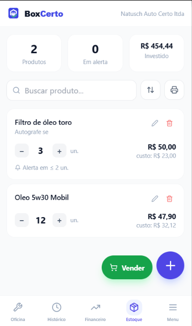

Mais estratégico
Planilha de OS para mecânica: modelo grátis e o custo escondido da planilha
Um guia para atrair quem procura modelo gratuito, educar sobre riscos da planilha e mostrar quando vale migrar para um sistema online.
Ler artigo